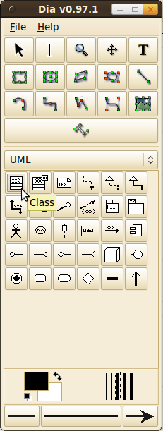
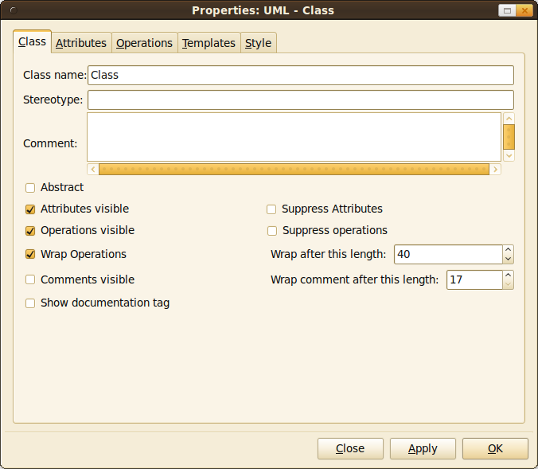
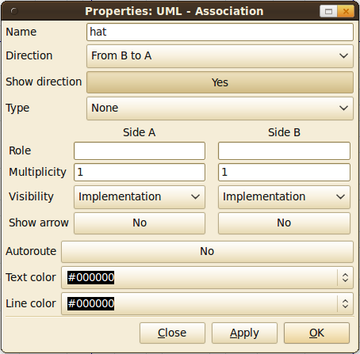
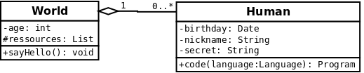
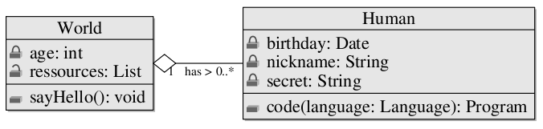

Dia
Creating UML diagrams with Dia works like a charm! It provides some default tools. You should simply try it. Dia is a free tool.
Take a look at these screenshots:
{kind=link}

{kind=link}

{kind=link}

{kind=link}

LaTeX
I only know MetaUML for creating class diagrams entirely in LaTeX. Does anybody know something different?
Of course, you can include a diagram created with Dia:
- Export the diagram as PNG (antialiased)
- Add something like that to your tex-file: \includegraphics[width=180mm]{myDiagramm.png}
MetaUML
A MetaUML class diagram looks like that in code (saved as myMetaDiagram.mp):
input metauml;
beginfig(1);
Class.World("World")
("-age: int",
"#ressources: List")
("+sayHello(): void");
Class.NoHuman("Human")
("-birthday: Date",
"-nickname: String",
"-secret: String")
("+code(language: Language): Program");
leftToRight(50)(World, NoHuman);
drawObjects(World, NoHuman);
link(aggregation)(NoHuman.w -- World.e);
item(iAssoc)("1")(obj.n = .2[World.e,NoHuman.w]);
item(iAssoc)("has >")(obj.n = .5[World.e,NoHuman.w]);
item(iAssoc)("0..*")(obj.n = .8[World.e,NoHuman.w]);
endfig;
end
You have to execute mpost before you can compile LaTeX. A working example is in this UML Archive.
It looks like that in your generated PDF file:
{kind=link}

See also
- Wikipedia: Class diagram, Dia
- Dia: Dia und UML
- MetaUML: Tutorial, Reference and Test Suite
- Freies Magazin, Mai 2012: Astah – Kurzvorstellung des UML-Programms (German)